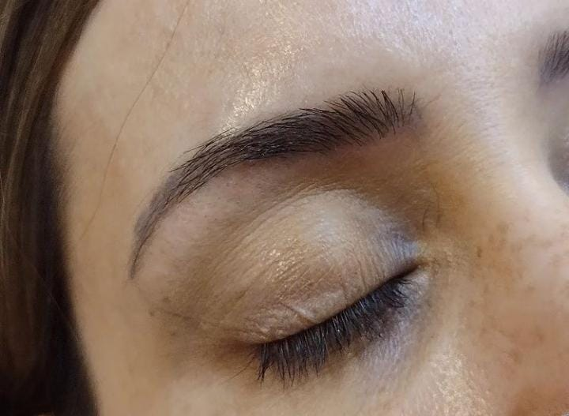

ESTILISMO
El alcance del trabajo del estilista de cejas incluye: Mapear la ceja, que es marcar profesionalmente la forma perfecta de la ceja, el comienzo, el arco y el final. Dar forma a la ceja, que es arrancar las cejas no deseadas o recortarlas para crear arcos bellos e iguales. Arreglo de la ceja, que son todos los tratamientos para fortalecer el pelo de las cejas (laminación de cejas, levantamiento de cejas). Tinte de ceja, que es aplicar pigmento semipermanente para enfatizar la forma de las cejas y no necesitar rellenos. Consultoría sobre cejas, que es compartir consejos para el cuidado de las cejas y darle forma por tu cuenta.
